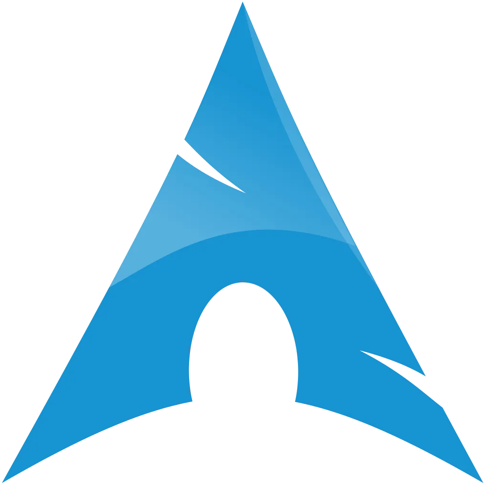

R.E.L.I.V.E.
R.E.L.I.V.E. is a fan effort to create a new engine, capable of replacing Digital Dialect's aging PC port for Oddworld's first two cult-classic games.
More than twenty years after their release, both games struggle to run on modern platforms, usually requiring a third-party application like DxWnd just to run them properly.
R.E.L.I.V.E. intends to become a complete replacement of both the original AbeWin.exe/Exoddus.exe and any third-party tools, by providing both convenience and compatibility features like:

Downloads & Instructions
Features
-
Native Resolution Support
It doesn't matter if your monitor is FullHD, 4k or perhaps an old rectangle CRT monitor, R.E.L.I.V.E. supports all.
-
Windowed mode
No more need for DxWnd or similar, simply press F12 and the game goes into windowed mode or back to fullscreen on the fly.
-
Modern Platforms
R.E.L.I.V.E. natively supports Windows 10, MacOS and Linux.
-
Modern Technologies
The re-write uses the modern and cross-platform SDL2 Graphics Library, instead of the long deprecated DirectDraw API.
-
Open Source
R.E.L.I.V.E. is a fully open-source codebase, which you can freely use for your own projects or extend as you see fit.
-
Numerous Bugfixes
Tired of the crashes and weird things the game sometimes does? Worry not, the project's scope includes fixing all of these!
Media
Downloads
Here be Scrabs!
While currently both Abe's Oddysee and Abe's Exoddus are in a playable state, both can present unexpected bugs, crashes and other regressions from the base game. We're working hard on fixing these and your reports help a lot to nail down where the issues are. If you'd like to see the list of current bugs or report one yourself feel free to check out the bug-tracker.
You have to own the games!
R.E.L.I.V.E. is a passion project created by fans and it will always be free to download and to tinker with. However, since it is just an engine, you have to own the actual game files to use the project.
The developers behind R.E.L.I.V.E. do not condone piracy and will never provide the game files to anyone.
If you don't own the games, you can buy them here.
Windows

Arch Linux
Use your favorite method to install relive-git from the AUR.
Source code
git clone --recursive https://github.com/AliveTeam/alive_reversing
Installation Guide
 Windows
Windows
Windows
These instructions work for both Abe's Oddysee and Abe's Exoddus.
Download the zip that fits your architecture (most likely 64-bits) from the links above.
Unzip it somewhere.
Navigate to where you installed the game (GOG asks you where you want to install it, with Steam you can right click on the game, select Manage -> Browse local files).
Copy relive.exe and SDL2.dll to the respective game's folder from the unzipped folder.
Run the game by launching relive.exe.
 Manual (Windows)
Manual (Windows)
Manual (Windows)
For instructions please see the README.
 Manual (Linux)
Manual (Linux)
Manual (Linux)
These instructions work for both Abe's Oddysee and Abe's Exoddus.
git clone https://github.com/AliveTeam/alive_reversing.git --recursiveInstall the development libraries for SDL2 using your distribution's package manager:
libsdl2-devon Ubuntu/Debian,sdl2on Arch,SDL2-develon Fedora, etc.Navigate to the cloned repository and call
cmake -B build -S .(the dot is important).Once this is done, you can issue
make.Copy
build/Source/relive/reliveinto the respective game's folder.Run the game by launching the newly copied executable.
The Future
After the engine is fully reimplemented, the focus will shift to adding new features that were never part of the original.
- Subtitles for cutscenes.
- Fixing the original games' bugs.
- Modding support.
- Level editor.
- Higher-resolution textures.
- Feature requests by the community.
Support Us!
R.E.L.I.V.E. is made by a bunch of volunteers in their free time. If you have good programming skills, feel free to join our Discord below and help us out with code or documentation; or if you feel adventurous, we could always use a few playtesters.
If you're less technically-inclined, but would still like to help, you can support the project with a donation on PayPal or Patreon.